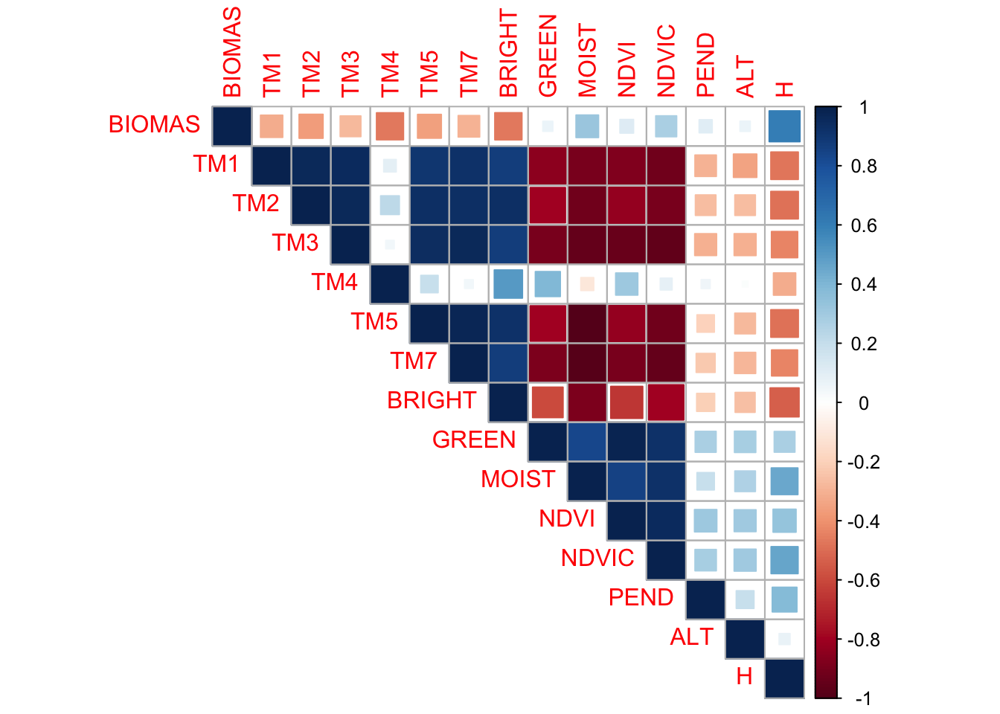
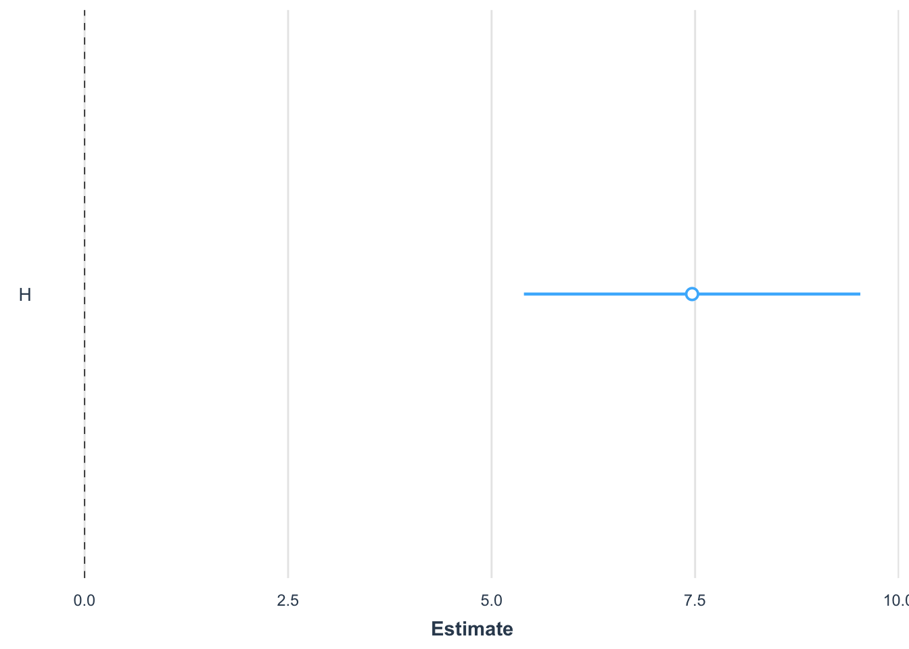

MSE <- mean((Obs-Pred)^2)6 Regresiones
6.1 Regresiones Lineales
Modelo estadístico que relaciona funcionalmente dos variables de forma lineal (una recta o, en su versión generalizada, un plano o un hiperplano). El caso más simple contiene una variable respuesta (Y; i.e. lo que se quiere explicar o predecir), y una variable explicativa o predictor (X; i.e., variables que se usan para explicar o predecir Y). A veces estas variables también son llamadas dependiente e independiente.
y=b_0+b_1*x_1
Que exista una relación funcional significativa entre ambas variables no implica una causalidad, pero la puede sugerir.
Creación de una función predictiva específica para el problema planteado, con los datos usados
Modelo estadístico que relaciona funcionalmente dos variables de forma lineal (una recta o, en su versión generalizada, un plano o un hiperplano). El caso más simple contiene una variable respuesta (Y; i.e. lo que se quiere explicar o predecir), y una variable explicativa o predictor (X; i.e., variables que se usan para explicar o predecir Y). A veces estas variables también son llamadas dependiente e independiente.
Que exista una relación funcional significativa entre ambas variables no implica una causalidad, pero la puede sugerir.
6.2 Regresión lineal múltiple
y = b0 + b1*x1 + b2*x2 + b3*x3 + … + bn*xn
Los coeficientes representan el cambio medio en la variable de respuesta para una unidad de cambio en la variable de predicción, manteniendo constantes los demás predictores del modelo. Ej:
Contaminación aire = 0 + 0.8*#Habitantes + 0.4*#Autos
El coeficiente indica que por cada habitante que se agregue al sistema hay un aumento de 0.8 (unidad) de contaminación; si se aumenta un auto hay un aumento de 0.5 (unidad) de contaminación, etc.
Se puede entender también como la importancia de las variables en el modelo
### Métricas de Ajustes de los modelos
Las métricas de regresiones buscan ver cuán parecido, cuanto error, o cuanto sesgo tienen los valores observados versus los predichos por el modelo. Las métricas más comunes son:
- Error cuadrático medio (mean square error; MSE)
- Raíz del error cuadrático medio (root mean square error; RMSE)
- Raíz del error cuadrático medio normalizada (normalized root mean square error; nRMSE)
- Coeficiente de determinación (coefficient of determination; R2)
- Sesgo (bias)
Error cuadrático medio (MSE): Mide el error o distancia media entre los valores predichos y los observados. O entre los puntos y la recta ajustada del modelo (líneas rojas en el ejemplo de abajo). Valores más bajos son deseables.
agregar formulas
Raíz de MSE (RMSE): Es la raíz cuadrada de MSE. La ventaja de RMSE sobre MSE, es que presenta valores de error en la unidad de medida de la variable observada. Por esta razón es una de las métricas más utilizadas.
RMSE <- sqrt(MSE)agregar formulas
Raíz de MSE normalizada (nRMSE): Es el RMSE pero normalizado por las observaciones de la variable respuesta. Esta normalización se puede hacer utilizando la media o el rango de las observaciones. La ventaja es que el error es presentado en porcentaje (0-1 o 0-100), con lo cual es mejor para comparar modelos que utilizan distintas variables o set de datos.
NRMSE <- RMSE/max(Obs)-min(Obs)agregar formulas
6.3 Coeficiente de determinación (R^2)
El coeficiente de determinación (o el cuadrado de la correlación de Pearson) es una de las métricas más utilizadas. Si bien esta es muy útil, pueden haber ocasiones donde valores altos de R² se obtienen cuando la dispersión o error de las predicciones es alta. Los valores van entre 0 y 1. Es una medida de ajuste relativa (porcentual), por lo que puede ser usada para comparar modelos entre sí.
Agregar formula
- T = número de observaciones,
- Yt = variables observadas,
- Ŷt = variables predichas por el modelo,
- Y = es la media de las variables observadas.
6.4 Sesgo
El sesgo indica si hay una distribución sistemática de los errores del modelo. Mientras más cercano a cero, menos sesgo (errores aleatorios), mientras más grande, ya sea positivo o negativo, indica que hay errores no aleatorios.
- Valores negativos: el modelo tiende a subestimar valores de Y
- Valores positivos: el modelo tiende a sobrestimar valores de Y
Hay muchas formas de estimar el sesgo, no es una fórmula específica
6.5 Residuos
Los residuos son la diferencia entre los valores observados y los predichos (obs - pred). Los residuos se utilizan mucho en post-hoc tests (o tests para analizar los resultados de los modelos). Los residuos, por un lado, dan estimaciones de posibles sesgos del modelo.
Es muy importante que los residuos se distribuyan de manera aleatoria en el modelo.
Un modelo con errores altos (ej., RMSE) y sesgos y residuos bajos puede ser considerado bueno bajo algunas circunstancias, ya que sus errores son independientes, y se distribuyen de forma aleatoria.
Un modelo con ajuste alto (R2) y error bajo (RMSE) pero con sesgos muy altos debe ser descartado ya que comete errores sistemáticos.

Output Modelo de Regresión
6.6 Distribución F de Fisher
Comparar si hay diferencias significativas entre dos varianzas. En caso de las regresiones proporciona esencialmente una medida de la cantidad de variación que explica el modelo frente a la cantidad de variación no explicada (por grados de libertad restantes).
- H0: El modelo NO explica la varianza de los datos Y
- H1: El modelo SI explica la varianza de los datos Y
Valores de F altos significa que su modelo explica mucho más de la variación por parámetro que el error por grado de libertad restante. No es sumamente importante este valor por ahora!
P-valor: probabilidad de que el la H0 sea verdad. P-valores significativos, ej., bajo alpha = 0.05, lleva a interpretar la probabilidad de que el modelo de regresión no explique una porción significativa de la varianza de Y es baja.
Se pueden comparar dos modelos lineales para ver cual es mejor utilizando un análisis de varianza (ANOVA) y el criterio Akaike.
ANOVA: Análisis de varianza para ver si hay si hay diferencia entre la varianza explicada de los dos modelos (F de Fisher).
# Ej.,
lm1 <- lm(y~x1)
lm2 <- lm(y~x1+x2+x3)
anova(lm1, lm2)Concepto de Parsimonia implica:
- Mientras más simple, mejor.
- Linear es mejor que no-lineal
- Paramétrico es mejor que no-paramétrico
Existen otras formas de comparar tros modelos lineales
6.7 Akaike’s information criteria (AIC):
AIC busca un balance entre la capacidad predictiva de un modelo (la varianza explicada) y la cantidad de parámetros que este debe considerar para lograr un mejor ajuste.
Es decir, premia a los modelos a medida que aumentan la varianza explicada, pero simultáneamente los penaliza a medida que aumentan el número de parámetros.
El criterio de Akaike es de parsimonia, el mejor ajuste con el menor número de parámetros posibles.
Los valores más bajos de AIC son preferibles. El valor en sí mismo no tiene mucha importancia, ya que depende del caso de estudio en particular, los datos particulares, etc.
AIC(lm1, lm2)6.8 Casos Aplicado
6.8.1 Lectura de Datos
data <- read.table('data/Pantanillos.txt', header = T)| XUTM | YUTM | LAT | LONG | BIOMAS | TM1 | TM2 | TM3 | TM4 | TM5 | TM7 | BRIGHT | GREEN | MOIST | NDVI | NDVIC | PEND | ALT | H |
|---|---|---|---|---|---|---|---|---|---|---|---|---|---|---|---|---|---|---|
| 744797.3 | 6071183 | -35.473 | -72.302 | 164.649 | 43 | 29 | 23 | 57 | 26 | 15 | 83.854 | -0.004 | -4.548 | 0.425 | 0.321 | 6.546 | 472.423 | 17.106 |
| 745007.3 | 6071183 | -35.473 | -72.300 | 88.663 | 48 | 36 | 37 | 66 | 53 | 32 | 109.035 | -9.390 | -29.607 | 0.282 | 0.141 | 17.793 | 491.138 | 2.838 |
| 744587.3 | 6071243 | -35.472 | -72.304 | 127.707 | 42 | 31 | 22 | 54 | 29 | 17 | 82.817 | -2.611 | -8.038 | 0.421 | 0.306 | 10.933 | 466.259 | 9.288 |
| 744797.3 | 6071363 | -35.471 | -72.302 | 203.209 | 43 | 29 | 23 | 62 | 28 | 15 | 87.794 | 3.431 | -5.745 | 0.459 | 0.338 | 15.306 | 497.456 | 13.273 |
| 745007.3 | 6071363 | -35.471 | -72.300 | 101.979 | 43 | 33 | 24 | 84 | 40 | 20 | 108.640 | 15.278 | -15.202 | 0.556 | 0.347 | 28.135 | 471.417 | 12.141 |
| 744587.3 | 6071423 | -35.471 | -72.304 | 185.372 | 44 | 29 | 22 | 53 | 27 | 16 | 81.422 | -2.956 | -5.942 | 0.413 | 0.308 | 18.362 | 484.353 | 9.874 |
6.8.1.1 Revisión espacial de los datos
data_sf <- data %>% sf::st_as_sf(coords = c("LONG", "LAT"), crs = 4326)
mapview::mapview(data_sf, zcol="BIOMAS")Definición de Variables Dependiente e Independiente
X <- data[ ,6:19]
Y <- data$BIOMAS6.8.2 Correlaciones
Vamos a seleccionar una variable X por mientras para ver una regresion simple podemos usar una simple correlacion para ver que predictor se relaciona mas con la biomasa.
cor(X, Y, method = "pearson") [,1]
TM1 -0.31361610
TM2 -0.36579661
TM3 -0.27179254
TM4 -0.46393079
TM5 -0.35940473
TM7 -0.29321630
BRIGHT -0.46834630
GREEN 0.06247448
MOIST 0.32239600
NDVI 0.11752383
NDVIC 0.27767911
PEND 0.10787286
ALT 0.06590560
H 0.60544860# cor(X)Visualización de las correlaciones
library(corrplot)corrplot 0.92 loadedcorr <- cor(data[,5:19])
corrplot(corr, type='upper', method = "square")
6.8.3 Regresión Lineal Simple
Cálculo de la Regresión Lineal
lm1 <- lm(BIOMAS ~ H, data = data)
# lm1 <- lm(Y ~ X$H)lm1 <- lm(Y ~ X$H)Explorar los resultados del Modelo
summary(lm1)
Call:
lm(formula = BIOMAS ~ H, data = data)
Residuals:
Min 1Q Median 3Q Max
-171.840 -28.994 -9.999 31.554 202.631
Coefficients:
Estimate Std. Error t value Pr(>|t|)
(Intercept) 29.215 8.057 3.626 0.000479 ***
H 7.464 1.040 7.177 2.05e-10 ***
---
Signif. codes: 0 '***' 0.001 '**' 0.01 '*' 0.05 '.' 0.1 ' ' 1
Residual standard error: 52.1 on 89 degrees of freedom
Multiple R-squared: 0.3666, Adjusted R-squared: 0.3595
F-statistic: 51.5 on 1 and 89 DF, p-value: 2.05e-10Referecias para explicar los modelos en R: (“Explaining the Lm() Summary in R – Learn by Marketing” n.d.)
plot_summs(lm1)Registered S3 methods overwritten by 'broom':
method from
tidy.glht jtools
tidy.summary.glht jtoolsLoading required namespace: broom.mixed
effect_plot(lm1, pred = H, interval = TRUE, plot.points = TRUE,
jitter = 0.05)Atributos del Modelo
Valores ajustados, equivale a lm1$fitted.values
fitted(lm1) 1 2 3 4 5 6 7 8
156.88779 50.39718 98.53738 128.27982 119.83103 102.91105 63.93614 60.08493
9 10 11 12 13 14 15 16
104.23211 83.30418 80.89344 54.32303 70.15332 37.13436 34.45493 56.01727
17 18 19 20 21 22 23 24
49.04627 72.52675 79.38579 95.52209 63.70477 65.24974 71.24301 61.44330
25 26 27 28 29 30 31 32
30.57386 50.92709 51.64360 54.36035 62.19713 36.11185 34.67884 52.58401
33 34 35 36 37 38 39 40
64.34664 35.39534 34.87289 38.82860 58.77133 39.32120 69.58609 78.97529
41 42 43 44 45 46 47 48
35.09680 122.92842 57.30101 137.13911 150.32729 63.81673 141.55010 168.30710
49 50 51 52 53 54 55 56
131.89967 108.71773 63.40623 99.51512 137.28839 125.94372 106.60553 32.98460
57 58 59 60 61 62 63 64
41.46325 96.23860 71.73560 29.21549 138.07953 98.91056 150.52135 114.18109
65 66 67 68 69 70 71 72
31.43964 30.87240 62.61509 30.00663 37.47022 35.17144 212.56624 125.07048
73 74 75 76 77 78 79 80
90.35728 29.36476 51.68092 30.38727 31.89492 34.56689 35.62672 36.07453
81 82 83 84 85 86 87 88
46.14293 68.04112 65.66770 57.03232 48.13571 33.66379 49.76277 36.90299
89 90 91
36.38054 50.88977 53.68116 residuos, equivale a lm1$residuals
resid(lm1) 1 2 3 4 5 6
7.761206 38.265823 29.169615 74.929177 -17.852030 82.460947
7 8 9 10 11 12
58.796856 33.938073 -38.262110 -20.012181 38.520561 9.144971
13 14 15 16 17 18
11.074679 65.181637 -23.405931 -27.581266 -15.812266 58.633255
19 20 21 22 23 24
-39.960792 -31.718091 -55.358772 2.211263 -62.109006 -12.198302
25 26 27 28 29 30
-25.504860 -44.329092 -38.534598 -44.839347 -23.402125 -26.973850
31 32 33 34 35 36
-28.195839 15.671989 39.747358 -32.397345 -31.874893 -23.883600
37 38 39 40 41 42
-50.244334 -32.176197 -39.591088 8.008706 -31.092801 71.049577
43 44 45 46 47 48
-27.682005 107.308886 55.306708 2.781274 60.096900 -94.215100
49 50 51 52 53 54
5.693332 4.259268 6.460772 -55.793116 -70.469386 202.631283
55 56 57 58 59 60
53.788466 -28.104602 -30.344250 -18.301596 -20.163604 -7.307485
61 62 63 64 65 66
-16.941527 -92.306564 -5.982345 -7.136086 -14.867638 -7.617404
67 68 69 70 71 72
24.145913 37.936373 38.423775 11.302563 -171.840236 66.782524
73 74 75 76 77 78
49.858719 39.476243 -6.461916 -18.468270 -19.300917 152.183115
79 80 81 82 83 84
91.183284 66.780468 -9.998926 -26.560123 -37.237699 -19.908316
85 86 87 88 89 90
-35.780707 -23.507790 -8.175771 -29.791991 -7.118540 8.905226
91
-1.176160 coeficientes, equivale a lm1$coefficients
coef(lm1) (Intercept) H
29.215485 7.463598 intervalos de confianza para dichos coeficientes
confint(lm1) 2.5 % 97.5 %
(Intercept) 13.206435 45.224535
H 5.397175 9.530021tabla de varianza-covarianza
vcov(lm1) (Intercept) H
(Intercept) 64.914946 -6.160668
H -6.160668 1.081563residuos estandarizados (dist. z)
rstandard(lm1) 1 2 3 4 5 6
0.15389729 0.73982298 0.56449928 1.46330265 -0.34749910 1.59728295
7 8 9 10 11 12
1.13514238 0.65539190 -0.74137098 -0.38646113 0.74374731 0.17670935
13 14 15 16 17 18
0.21376464 1.26361310 -0.45406718 -0.53284772 -0.30577684 1.13173782
19 20 21 22 23 24
-0.77148418 -0.61347793 -1.06878028 0.04268813 -1.19882496 -0.23554096
25 26 27 28 29 30
-0.49533686 -0.85697946 -0.74487989 -0.86643196 -0.45185478 -0.52305285
31 32 33 34 35 36
-0.54695653 0.30290150 0.76735215 -0.62833868 -0.61829219 -0.46281511
37 38 39 40 41 42
-0.97040227 -0.62343551 -0.76419725 0.15461288 -0.60308534 1.38458456
43 44 45 46 47 48
-0.53471896 2.10408491 1.09220942 0.05369612 1.18099673 -1.88317274
49 50 51 52 53 54
0.11136024 0.08262197 0.12473664 -1.07993497 -1.38184634 3.95342959
55 56 57 58 59 60
1.04281942 -0.54544260 -0.58765284 -0.35402625 -0.38919655 -0.14197977
61 62 63 64 65 66
-0.33233882 -1.78647561 -0.11815437 -0.13864696 -0.28867393 -0.14792643
67 68 69 70 71 72
0.46620289 0.73689953 0.74482158 0.21922355 -3.58391038 1.30250579
73 74 75 76 77 78
0.96357987 0.76696255 -0.12490918 -0.35869754 -0.37470162 2.95221126
79 80 81 82 83 84
1.76836956 1.29495988 -0.19345720 -0.51268695 -0.71885512 -0.38456953
85 86 87 88 89 90
-0.69203146 -0.45614254 -0.15808431 -0.57758225 -0.13802677 0.17215869
91
-0.02272895 significancia de la influencia de las variables
anova(lm1) Analysis of Variance Table
Response: BIOMAS
Df Sum Sq Mean Sq F value Pr(>F)
H 1 139779 139779 51.504 2.05e-10 ***
Residuals 89 241539 2714
---
Signif. codes: 0 '***' 0.001 '**' 0.01 '*' 0.05 '.' 0.1 ' ' 16.9 Modelo de Regresion Multiple
Cálculo de la Regresión Lineal Multiple
lm2 <- lm(BIOMAS ~ H + TM2 + TM5, data = data)
summary(lm2)
Call:
lm(formula = BIOMAS ~ H + TM2 + TM5, data = data)
Residuals:
Min 1Q Median 3Q Max
-162.26 -31.35 -11.10 28.64 200.80
Coefficients:
Estimate Std. Error t value Pr(>|t|)
(Intercept) 75.50158 68.04392 1.110 0.270
H 6.89284 1.19982 5.745 1.33e-07 ***
TM2 -1.25048 3.03877 -0.412 0.682
TM5 0.01689 1.04880 0.016 0.987
---
Signif. codes: 0 '***' 0.001 '**' 0.01 '*' 0.05 '.' 0.1 ' ' 1
Residual standard error: 52.39 on 87 degrees of freedom
Multiple R-squared: 0.3737, Adjusted R-squared: 0.3521
F-statistic: 17.3 on 3 and 87 DF, p-value: 6.754e-09plot_summs(lm2, robust = TRUE, plot.distributions = TRUE, inner_ci_level = .9)Comparación de Modelos con Anova
anova(lm1, lm2)Analysis of Variance Table
Model 1: BIOMAS ~ H
Model 2: BIOMAS ~ H + TM2 + TM5
Res.Df RSS Df Sum of Sq F Pr(>F)
1 89 241539
2 87 238818 2 2721.2 0.4957 0.6109El p-value del estadistico F es alto (Pr(>F) = 0.6109; mayor a 0.05), es decir, hay una probabilidad muy baja de que lm2 agregue algo a la varianza explicada, por lo que se podria decir que las variables TM2 y TM5 no agregan mas informacion Por lo tanto, el modelo lm1 seria el mejor en este caso por el principio de la parsimonia si dos modelos son iguales estadisticamente, el mas sensillo es mejor.
Comparación de Modelos con Akaike
Otro criterio para seleccionar modelo es el AIC o Akaike Information Criterion. El AIC busca un balance entre la capacidad predictiva de un modelo (la varianza explicada) y la cantidad de parametros que este debe considerar para lograr un mejor ajuste. Es decir, premia a los modelos a medida que aumentan la varianza explicada, pero simultaneamente los penaliza a medida que aumentan el numero de parametros. El criterio de Akaike es de parsimonia, el mejor ajuste con el menor numero de parametros posibles. Los valores mas bajos de AIC son preferibles.
AIC(lm1, lm2) df AIC
lm1 3 981.6841
lm2 5 984.6531AIC concuerda que lm1 es mejor en este caso